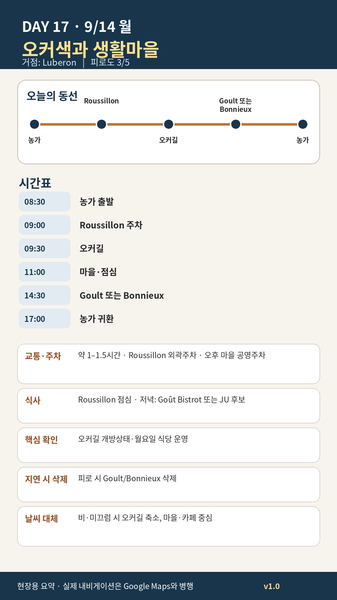

Day 17 · 9/14 월 · Luberon Phase 4 최종

카드의 지도영역은 일정 순서를 보여주는 개요이며 내비게이션이 아닙니다. 실제 도보·운전 경로는 Google Maps에서 다시 계산하세요.
시간표
이 날은 원고에 시각표가 없다. 구간 일정은 일정 한눈에 에 있다.
이 날의 메모
Roussillon의 오커와 Goult의 조용한 생활감
Sentier des Ocres를 보는 법
두 코스가 있다면 짧은 코스를 기본으로 한다. 목표는 운동량이 아니라 색의 층, 침식 지형, 마을 벽색과 자연지형의 관계를 보는 것이다.
오늘 꼭 해볼 것
- 오커길에서는 붉은 지층만 보지 말고 노랑·주황·보라빛의 변화 관찰하기
- 밝은 신발·흰 바지는 피하고, 오커먼지가 묻어도 되는 복장 사용
- Roussillon과 Goult를 비교해 “관광마을”과 “생활마을”의 차이를 느끼기
- Goult에서 상점보다 골목·벽·풍차를 천천히 보기
Bonnieux 대체안
Goult보다 전망과 식사를 우선하면 오후를 Bonnieux로 바꾼다.
- 높은 마을에서 북쪽 Mont Ventoux 방향 전망
- 교회 주변 오르막은 체력에 따라 축소
- Goût Bistrot: 2026년 €39 메뉴, 월요일 점심·저녁 운영
- JU – Maison de Cuisine: 점심 €65부터, 특별식 후보
우천 대체
- 오커길 폐쇄: Roussillon 골목 45분 → ôkhra 관련 실내 프로그램 또는 농가 요리·스케치
- 비가 지속되면 Goult 대신 Apt 장보기·카페
오늘 확인할 것
- 핵심 실행
- Roussillon·Goult/Bonnieux
- 권장 출발
- 08:30 출발
- 완충
- 오커길 후 60분 휴식
- 최고 리스크
- 월요일 식당·미끄럼
- 우선 삭제
- 오후 마을
- 대체안
- 오커길 축소·카페
- 식사·휴식
- Roussillon 점심
- 잠금 필요
- 오커길
이 날의 장소
일자별 시간표와 본문 표기에서 찾은 것이다. 하루의 전부가 아니라 장소 카드가 있는 것만 담는다.